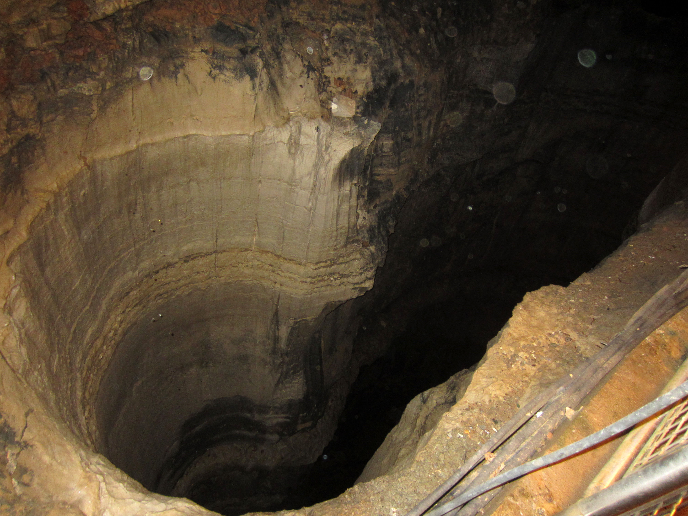

About the PCU
Listed below are images and text explaining the history and purpose of the PCU.
About Bottomless pits
The first bottomeless pit was discovered late 1976 by a "Elijah Fleming". Mr. Fleming had been hiking in the northern Tennessee area when he nearly stumbled into a newly formed pit that had grown centered on the main hiking trail. Mr. Fleming had called park rangers to protect other hikers. By the time the park rangers arrived to the scene Mr. Fleming was nowhere to be seen. The only evidence that he had been There was a snapped rope and the sounds of ever quieter screams. The PCU was formed not long after this incident.
PCU's Founding
The PCU was formed about 2 years after the first discovery of bottemless pits when the American Government dictated that a specilized unit was need to deal with this emerging problem. We have since studied, tested, and explored these phenomenon in the hopes of understanding and preventing futher occurences.